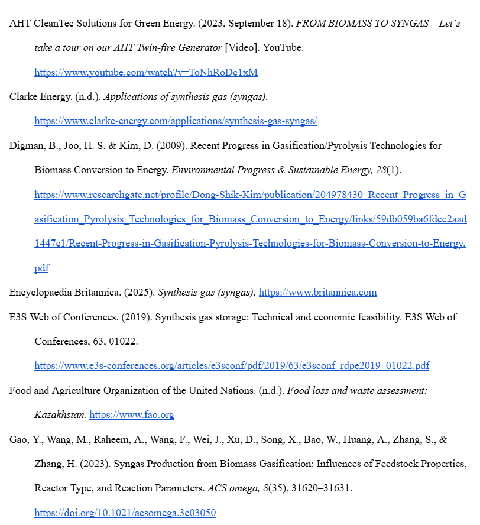
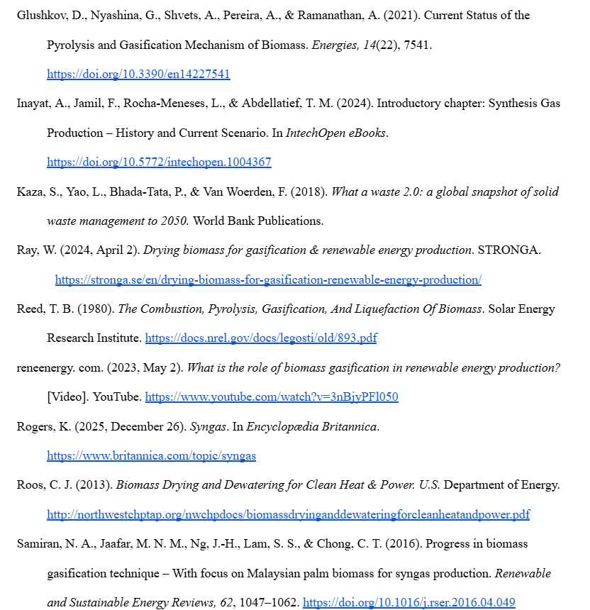
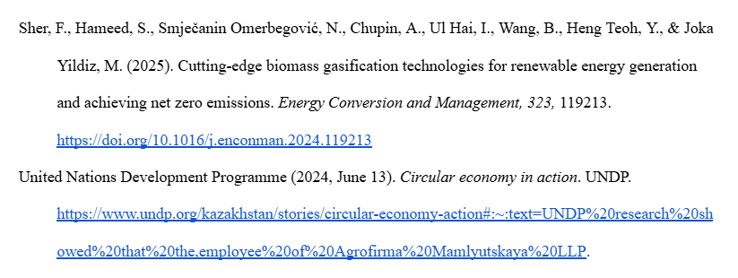

Conclusion
In conclusion, producing synthesis gas through biomass gasification is an important scientific process with clear environmental, economic, and industrial benefits. Over time, basic scientific discoveries about gases and chemical reactions have developed into modern technologies that can solve real-world problems. By turning agricultural and organic waste into a useful energy source and chemical raw material, syngas helps reduce greenhouse gas emissions, manage waste, and decrease dependence on fossil fuels. Although there are still challenges, such as high costs, safety risks and storage difficulties, ongoing scientific research is improving the efficiency and safety of this technology. Overall, syngas production shows how science can support sustainable development and help create a cleaner and more secure energy future.
Reference list


